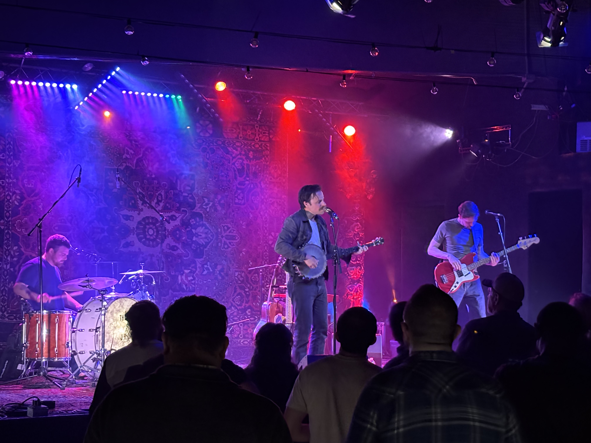
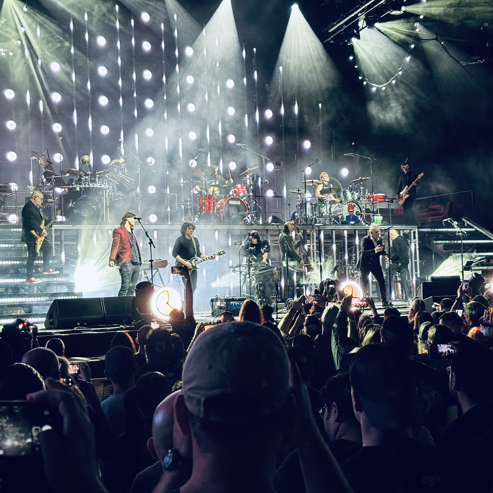
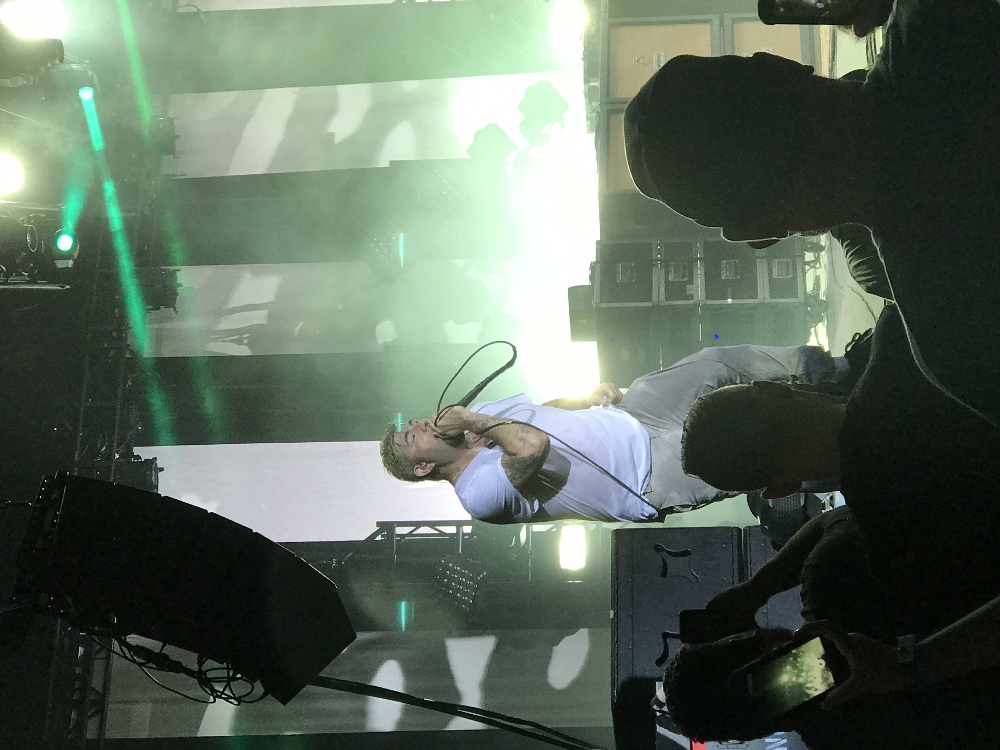

More Cowbell
The Daily Soundtrack
For me, music is the essential backdrop to everything I do. It has this incredible ability to set the tone for the day right from the start, or completely turn things around when the day feels like it’s going off the rails. There’s a specific kind of comfort in knowing that no matter what’s happening, I can find a track that matches my mood or helps me shift into a better one. It’s my go-to escape and the easiest way to find a little bit of focus when the world gets too busy.

From Acoustic Grit to Heavy Riffs
My taste in music is a bit all over the place, but it almost always stays rooted in rock. I’ve always loved the range you can find in the genre—one day I’m leaning into the raw, soulful storytelling of The Bones of J.R. Jones, and the next I’m looking for something much heavier like the Deftones. I’ve always been a big fan of The Black Keys for that classic, gritty sound, too. Whether it’s a mellow folk-rock melody or a wall of sound from a death metal track, if it has a solid guitar part and some real emotion behind it, I’m probably going to have it on repeat.

Life in the Front Row
Nothing beats the energy of a live show, and I’ve made it a point to experience that as often as possible. I’ve been to hundreds of concerts all over the country, from tiny local venues to massive stadiums, and each one has its own unique memory attached to it. When I’m not traveling for a show, I’m usually deep in a Spotify rabbit hole, constantly updating my playlists and looking for the next band to obsess over. It’s a hobby that never gets old and a huge part of how I stay connected to the things I enjoy.
